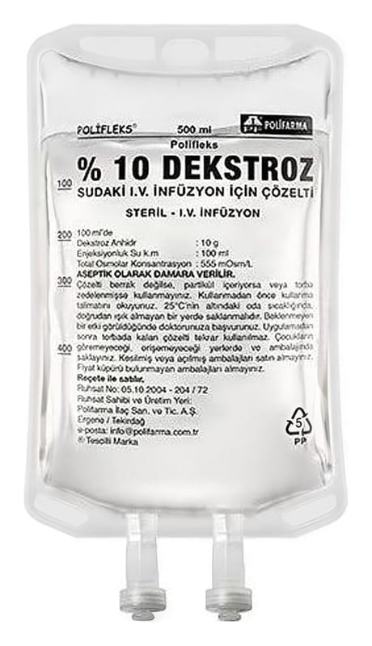

Polifleks %20 Mannitol Sudaki I.V. İnfüzyon İçin Çözelti, 250 ml Pvc Torba (Setli)

Ne için kullanılır
KT · Bölüm 1POLİFLEKS %20 MANNİTOL idrar söktürücü etkili mannitol adlı etkin maddeyi içerir ve damar içi yoldan uygulanan bir çözeltidir.
Bir grup hastalığa bağlı azalmış idrar miktarını arttırır ya da hiç olmayan idrarın oluşmasını sağlar. Artmış kafa içi basıncı ve göz içi basıncını azaltmak ya da böbreklerden atılan maddelerle olan zehirlenme durumlarında bu maddelerin böbreklerden atılımını teşvik etmek amacıyla da kullanılır.
Bu ilacı kullanmaya başlamadan önce bu KULLANMA TALİMATINI dikkatlice okuyunuz, çünkü sizin için önemli bilgiler içermektedir. • Bu kullanma talimatını saklayınız. Daha sonra tekrar okumaya ihtiyaç duyabilirsiniz. • Eğer ilave sorularınız olursa, lütfen doktorunuza veya eczacınıza danışınız. • Bu ilaç kişisel olarak sizin için reçete edilmiştir, başkalarına vermeyiniz. • Bu ilacın kullanımı sırasında, doktora veya hastaneye gittiğinizde doktorunuza bu ilacı kullandığınızı söyleyiniz. • Bu talimatta yazılanlara aynen uyunuz. İlaç hakkında size önerilen dozun dışında yüksek veya düşük doz kullanmayınız.
POLİFLEKS % 20 MANNİTOL, 100, 150, 250, 500 ve 1000 ml’lik PVC ve PP torbalarda sunulmuştur. Setli ve setsiz iki formu bulunmaktadır.
İlaç yalnızca toplardamar içine ve bu amaca uygun bir plastik boru (set) aracılığıyla uygulanır.